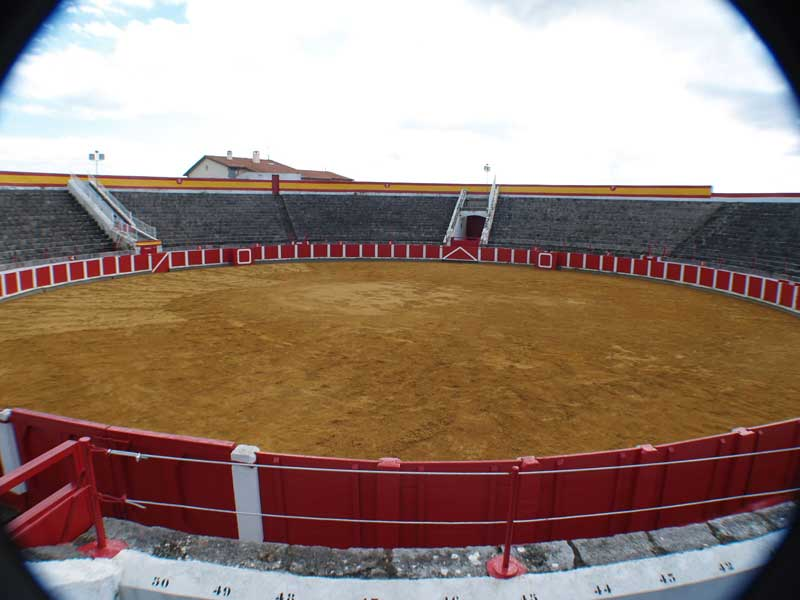

Encuentro en Santoña |
|
 Un detalle que quizás pocos conocéis es el siguiente: si vais a la Galería de Fotos, en el enlace "Vistas del Patronato Militar 'Virgen del Puerto'", la primera fotografía apreciaréis una muralla de arcos y al fondo una pequeña fortaleza en todo lo largo de la playa. Pues bien, esto de deshizo y con las piedras de esa muralla y ese pequeño fortín, construyeron la plaza de toros que, como podéis apreciar, es totalmente de piedra. |